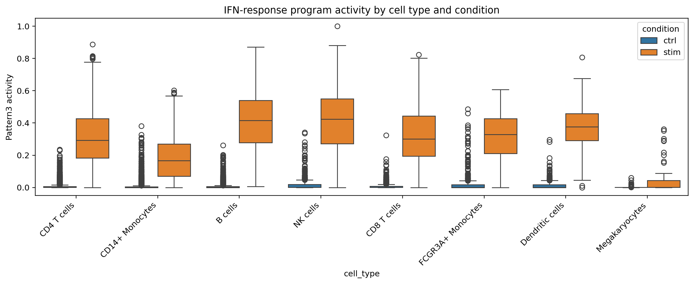

If you’re on an Apple Silicon Mac, the --platform linux/amd64 flag is required.
1.2 Step 1 — One-time setup inside the container
In RStudio → Terminal:
cd /home/rstudio/projectbash setup_venv.sh
(Optional sanity check)
cd /home/rstudio/projectsource _environmentquarto check jupyter
1.3 Step 2 — Render (optional)
cd /home/rstudio/projectsource _environmentquarto render cogaps_case_study4_student.qmd
1.4 Important note about distributed / multiprocessing
Do not run distributed CoGAPS during Quarto render.
Quarto executes every code chunk when rendering, and long-running / multi-process steps can fail or make renders painfully slow.
If you want distributed CoGAPS, run it from Terminal using the provided script (see the optional section near the end), then come back and load the result in this notebook.
2 Overview
This case study applies CoGAPS (Bayesian NMF) to single-cell RNA-seq PBMCs under control vs IFN-β stimulation (Kang et al., 2018; GEO: GSE96583).
Learning goal: use a latent factor model to separate:
Cell identity programs (stable lineage modules; “what a cell is”)
Cellular activity programs (stimulus-induced modules; “what a cell is doing”)
2.1 Research questions
Q1: What transcriptional programs respond to IFN-β stimulation across PBMCs? Q2: Can we separate “cell type identity programs” from the “interferon response program”? Q3: How does interferon-response pattern strength vary across immune cell types?
import timeimport numpy as npimport pandas as pdimport scanpy as scimport matplotlib.pyplot as pltimport seaborn as snsfrom IPython.display import displaynp.random.seed(42)plt.rcParams["figure.dpi"] =110
5 3. Load data
The dataset is baked into the Docker image at:
/opt/data/kang_counts_25k.h5ad
If it is not found, we fall back to downloading via Figshare.
path_img ="/opt/data/kang_counts_25k.h5ad"path_local ="kang_counts_25k.h5ad"if os.path.exists(path_img):print(f"Loading dataset from image: {path_img}") adata = sc.read(path_img)else:print("Image dataset not found; using local path or downloading via backup_url.") adata = sc.read( path_local, backup_url="https://figshare.com/ndownloader/files/34464122", )adata
Loading dataset from image: /opt/data/kang_counts_25k.h5ad
if"condition"notin adata.obs and"label"in adata.obs: adata.obs["condition"] = adata.obs["label"]required = ["condition", "cell_type"]missing = [c for c in required if c notin adata.obs.columns]assertnot missing, f"Missing required columns in adata.obs: {missing}"adata.obs[["condition", "cell_type"]].head()
condition
cell_type
index
AAACATACATTTCC-1
ctrl
CD14+ Monocytes
AAACATACCAGAAA-1
ctrl
CD14+ Monocytes
AAACATACCATGCA-1
ctrl
CD4 T cells
AAACATACCTCGCT-1
ctrl
CD14+ Monocytes
AAACATACCTGGTA-1
ctrl
Dendritic cells
6 4. Dataset overview
from textwrap import filldef wrap(text, width=90):return fill(text, width=width)overview = pd.DataFrame({"Item": ["Number of cells","Number of genes","Cell-level metadata (obs)","Gene-level metadata (var)","Embeddings available" ],"Summary": [f"{adata.n_obs:,}",f"{adata.n_vars:,}", wrap(", ".join(adata.obs.columns), width=90), wrap(", ".join(adata.var.columns), width=90),", ".join(adata.obsm.keys()) ]})overview
Item
Summary
0
Number of cells
24,673
1
Number of genes
15,706
2
Cell-level metadata (obs)
nCount_RNA, nFeature_RNA, tsne1, tsne2, label,...
3
Gene-level metadata (var)
name
4
Embeddings available
X_pca, X_umap
6.1 Categorical distributions
def summarize_categorical(adata, col): vc = adata.obs[col].value_counts()return vc.reset_index().rename(columns={"index": col, col: "n_cells"})for col in ["condition", "cell_type", "replicate"]:if col in adata.obs: display(summarize_categorical(adata, col).head(50))
plt.figure(figsize=(12, 5))sns.boxplot(data=df_isg, x="cell_type", y=isg_pattern, hue="condition")plt.xticks(rotation=45, ha="right")plt.ylabel(f"{isg_pattern} activity")plt.title("IFN-response program activity by cell type and condition")plt.tight_layout()plt.show()

16 14. Pattern gene summaries (interpretability)
for pat in pattern_names:print(f"\n=== {pat}: top genes ===") display(A[pat].sort_values(ascending=False).head(12))
Your error happened because the distributed script is currently trying to read kang_counts_25k.h5ad from the project directory, then downloading a file that ends up corrupt/empty (0 bytes), which causes:
OSError: Unable to open file (file signature not found)
Then run distributed from Terminal:
cd /home/rstudio/projectsource _environment./.venv/bin/python run_pycogaps_distributed.py
If you ran the script successfully and it created data/cogaps_result_distributed.h5ad, you can load it below.
dist_path ="data/cogaps_result_distributed.h5ad"if os.path.exists(dist_path): dist_result = sc.read_h5ad(dist_path) dist_resultelse:print("Distributed result not found. Run run_pycogaps_distributed.py from Terminal first.")
Distributed result not found. Run run_pycogaps_distributed.py from Terminal first.
18 Final answers (summary)
Q1: Identify the pattern most correlated with stimulation; validate using top genes (expected ISG enrichment).
Q2: Identity patterns localize by cell type; the IFN response pattern shows condition association across cell types.
Q3: Compare IFN pattern activity by immune cell type (and split by condition) to quantify heterogeneity.
19 References
Kang, H. M., Subramaniam, M., Targ, S., Nguyen, M., Maliskova, L., McCarthy, E., … Ye, C. J. (2018). Multiplexed droplet single-cell RNA-sequencing using natural genetic variation. Nature Biotechnology, 36(1), 89–94. https://doi.org/10.1038/nbt.4042
Kotliar, D., Veres, A., Nagy, M. A., Tabrizi, S., Hodis, E., Melton, D. A., & Sabeti, P. C. (2019). Identifying gene expression programs of cell-type identity and cellular activity with single-cell RNA-Seq. eLife, 8, e43803. https://doi.org/10.7554/eLife.43803
Stein-O’Brien, G. L., Clark, B. S., Sherman, T., Zibetti, C., Hu, Q., Sealfon, R., … Fertig, E. J. (2019). Decomposing cell identity for transfer learning across cellular measurements, platforms, tissues, and species. Cell Systems, 8(5), 395–411.e8. https://doi.org/10.1016/j.cels.2019.04.004
Fertig, E. J., Ding, J., Favorov, A. V., Parmigiani, G., & Ochs, M. F. (2010). CoGAPS: An R/C++ package to identify patterns and biological process activity in transcriptomic data. Bioinformatics, 26(21), 2792–2793. https://doi.org/10.1093/bioinformatics/btq503
Source Code
---title: "Case Study 4 (Student Version): CoGAPS Bayesian NMF for IFN-β Responses in PBMC scRNA-seq"author: "Oshane Thomas"format: html: toc: true toc-depth: 3 number-sections: true code-fold: false code-tools: trueexecute: echo: true warning: false message: false cache: true freeze: autojupyter: cogaps_sc---# How to use this notebookThis notebook is designed to be used **inside the provided Docker image** (RStudio Server + Quarto).You can work in either mode:- **Interactive mode (recommended for learning):** run code chunks one-by-one while you read the narrative.- **Render mode (recommended for a complete report):** render the full notebook to HTML.## Step 0 — Launch the container``` bashdocker pull --platform linux/amd64 othomas2/ottr-ocs-pycogaps:latestdocker run --platform linux/amd64 -it--rm\-p 8787:8787 \-e PASSWORD="Password12"\ othomas2/ottr-ocs-pycogaps:latest```Open:- **URL:** http://localhost:8787- **User:** `rstudio`- **Password:** whatever you set in `PASSWORD=...`> If you’re on an Apple Silicon Mac, the `--platform linux/amd64` flag is required.## Step 1 — One-time setup inside the containerIn **RStudio → Terminal**:``` bashcd /home/rstudio/projectbash setup_venv.sh```(Optional sanity check)``` bashcd /home/rstudio/projectsource _environmentquarto check jupyter```## Step 2 — Render (optional)``` bashcd /home/rstudio/projectsource _environmentquarto render cogaps_case_study4_student.qmd```------------------------------------------------------------------------## Important note about distributed / multiprocessing**Do not run distributed CoGAPS during Quarto render.**\Quarto executes every code chunk when rendering, and long-running / multi-process steps can fail or make renders painfully slow.If you want distributed CoGAPS, run it **from Terminal** using the provided script (see the optional section near the end), then come back and load the result in this notebook.------------------------------------------------------------------------# OverviewThis case study applies **CoGAPS (Bayesian NMF)** to single-cell RNA-seq PBMCs under **control vs IFN-β stimulation** (Kang et al., 2018; GEO: GSE96583).Learning goal: use a latent factor model to separate:- **Cell identity programs** (stable lineage modules; “what a cell is”)- **Cellular activity programs** (stimulus-induced modules; “what a cell is doing”)## Research questions**Q1:** What transcriptional programs respond to IFN-β stimulation across PBMCs?\**Q2:** Can we separate “cell type identity programs” from the “interferon response program”?\**Q3:** How does interferon-response pattern strength vary across immune cell types?------------------------------------------------------------------------# 1. Environment check (run this first)```{python}import osimport sysimport platformprint("Python:", sys.version)print("Executable:", sys.executable)print("Platform:", platform.platform())# Verify PyCoGAPS is importable (this confirms setup worked)import pycogapsfrom PyCoGAPS.parameters import CoParams, setParamsfrom PyCoGAPS.pycogaps_main import CoGAPSprint("✅ pycogaps + PyCoGAPS imports OK")```------------------------------------------------------------------------# 2. Imports and global settings```{python}import timeimport numpy as npimport pandas as pdimport scanpy as scimport matplotlib.pyplot as pltimport seaborn as snsfrom IPython.display import displaynp.random.seed(42)plt.rcParams["figure.dpi"] =110```------------------------------------------------------------------------# 3. Load dataThe dataset is baked into the Docker image at:- `/opt/data/kang_counts_25k.h5ad`If it is not found, we fall back to downloading via Figshare.```{python}path_img ="/opt/data/kang_counts_25k.h5ad"path_local ="kang_counts_25k.h5ad"if os.path.exists(path_img):print(f"Loading dataset from image: {path_img}") adata = sc.read(path_img)else:print("Image dataset not found; using local path or downloading via backup_url.") adata = sc.read( path_local, backup_url="https://figshare.com/ndownloader/files/34464122", )adata```## Confirm required metadata```{python}if"condition"notin adata.obs and"label"in adata.obs: adata.obs["condition"] = adata.obs["label"]required = ["condition", "cell_type"]missing = [c for c in required if c notin adata.obs.columns]assertnot missing, f"Missing required columns in adata.obs: {missing}"adata.obs[["condition", "cell_type"]].head()```------------------------------------------------------------------------# 4. Dataset overview```{python}from textwrap import filldef wrap(text, width=90):return fill(text, width=width)overview = pd.DataFrame({"Item": ["Number of cells","Number of genes","Cell-level metadata (obs)","Gene-level metadata (var)","Embeddings available" ],"Summary": [f"{adata.n_obs:,}",f"{adata.n_vars:,}", wrap(", ".join(adata.obs.columns), width=90), wrap(", ".join(adata.var.columns), width=90),", ".join(adata.obsm.keys()) ]})overview```## Categorical distributions```{python}def summarize_categorical(adata, col): vc = adata.obs[col].value_counts()return vc.reset_index().rename(columns={"index": col, col: "n_cells"})for col in ["condition", "cell_type", "replicate"]:if col in adata.obs: display(summarize_categorical(adata, col).head(50))```------------------------------------------------------------------------# 5. Preprocessing and gene selection (HVGs)```{python}MIN_CELLS =3TARGET_SUM =1e4N_TOP_GENES =3000HVG_FLAVOR ="seurat_v3"print("Preprocessing choices:")print(f" min_cells: {MIN_CELLS}")print(f" target_sum: {TARGET_SUM}")print(f" n_top_genes (HVGs): {N_TOP_GENES}")print(f" HVG flavor: {HVG_FLAVOR}")``````{python}adata.layers["counts"] = adata.X.copy()``````{python}before = adata.n_varssc.pp.filter_genes(adata, min_cells=MIN_CELLS)after = adata.n_varsprint(f"Genes: {before} -> {after} after min_cells={MIN_CELLS}")``````{python}sc.pp.normalize_total(adata, target_sum=TARGET_SUM)sc.pp.log1p(adata)``````{python}sc.pp.highly_variable_genes( adata, n_top_genes=N_TOP_GENES, flavor=HVG_FLAVOR, layer="counts",)print("HVGs selected:", int(adata.var["highly_variable"].sum()))adata = adata[:, adata.var["highly_variable"]].copy()adata```------------------------------------------------------------------------# 6. Prepare data for CoGAPS```{python}adata_cogaps = adata.T.copy() # genes × cellsadata_cogaps.X = np.asarray(adata_cogaps.X.toarray(), dtype=np.float64)print(adata_cogaps)print("Matrix dtype:", adata_cogaps.X.dtype)```------------------------------------------------------------------------# 7. Run CoGAPS (single-process; safe for Quarto render)```{python}N_PATTERNS =5N_ITER =2000# classroom default; increase for final analysis runsSEED =42USE_SPARSE_OPT =Trueprint("CoGAPS choices:")print(f" nPatterns: {N_PATTERNS}")print(f" nIterations: {N_ITER}")print(f" seed: {SEED}")print(f" useSparseOptimization: {USE_SPARSE_OPT}")``````{python}os.makedirs("data", exist_ok=True)result_path ="data/cogaps_result.h5ad"if os.path.exists(result_path):print(f"Loading existing CoGAPS result: {result_path}") result = sc.read_h5ad(result_path)else: params = CoParams(adata=adata_cogaps) setParams( params, {"nPatterns": N_PATTERNS,"nIterations": N_ITER,"seed": SEED,"useSparseOptimization": USE_SPARSE_OPT,# NOTE: Do NOT set "distributed" inside this notebook. }, ) params.printParams() start = time.time() result = CoGAPS(adata_cogaps, params) elapsed = time.time() - startprint(f"CoGAPS finished in {elapsed/60:.2f} minutes") result.write_h5ad(result_path)print(f"Saved: {result_path}")result```------------------------------------------------------------------------# 8. Extract matrices A and P```{python}A = result.obs.filter(regex="Pattern") # genes × patternsP = result.var.filter(regex="Pattern") # cells × patternsprint("A:", A.shape, "| P:", P.shape)A.head()```------------------------------------------------------------------------# 9. Attach pattern activities back to cells```{python}P_cells = P.copy()P_cells.index = adata.obs_namesfor col in P_cells.columns: adata.obs[col] = P_cells[col].valuespattern_names =list(P_cells.columns)pattern_names[:5], adata.obs[pattern_names].head()```------------------------------------------------------------------------# 10. Q1 — Which programs respond to IFN-β stimulation?```{python}cond = (adata.obs["condition"] =="stim").astype(int)corrs = {pat: np.corrcoef(adata.obs[pat], cond)[0, 1] for pat in pattern_names}corr_series = pd.Series(corrs).sort_values(ascending=False)corr_table = ( corr_series.rename("Correlation with IFN-β stimulation (stim=1, ctrl=0)") .to_frame() .round(3))corr_table``````{python}isg_pattern = corr_series.index[0]print("Top IFN-associated pattern:", isg_pattern, "corr =", round(float(corr_series.iloc[0]), 3))``````{python}top_isg_genes = A[isg_pattern].sort_values(ascending=False).head(30)top_isg_genes```------------------------------------------------------------------------# 11. Q2 — Identity vs activity programs```{python}mean_by_cond = adata.obs.groupby("condition")[pattern_names].mean()plt.figure(figsize=(9, 3))sns.heatmap(mean_by_cond, annot=True, fmt=".2f")plt.title("Mean CoGAPS pattern activity by condition")plt.ylabel("Condition")plt.xlabel("Pattern")plt.tight_layout()plt.show()``````{python}mean_by_type = adata.obs.groupby("cell_type")[pattern_names].mean()sns.clustermap(mean_by_type, figsize=(10, 8), standard_scale=0)plt.suptitle("Pattern activity by immune cell type", y=1.02)plt.show()``````{python}sc.pl.stacked_violin( adata, pattern_names, groupby="cell_type", figsize=(14, 10), stripplot=False, scale="width", yticklabels=True, use_raw=False,)``````{python}sc.pl.stacked_violin( adata, pattern_names, groupby="condition", figsize=(12, 6), stripplot=False, scale="width", yticklabels=True, use_raw=False,)```------------------------------------------------------------------------# 12. Visualize programs on UMAP```{python}if"X_umap"notin adata.obsm: sc.pp.pca(adata) sc.pp.neighbors(adata) sc.tl.umap(adata)sc.pl.umap(adata, color=["condition", isg_pattern], color_map="viridis", wspace=0.4)``````{python}sc.pl.umap(adata, color=pattern_names, color_map="viridis", ncols=3)```------------------------------------------------------------------------# 13. Q3 — IFN program strength across immune cell types```{python}df_isg = adata.obs[["cell_type", "condition", isg_pattern]].copy()summary_by_type = ( df_isg.groupby("cell_type")[isg_pattern] .agg(["mean", "median", "std", "count"]) .sort_values("mean", ascending=False))summary_by_type``````{python}plt.figure(figsize=(12, 5))sns.boxplot(data=df_isg, x="cell_type", y=isg_pattern, hue="condition")plt.xticks(rotation=45, ha="right")plt.ylabel(f"{isg_pattern} activity")plt.title("IFN-response program activity by cell type and condition")plt.tight_layout()plt.show()```------------------------------------------------------------------------# 14. Pattern gene summaries (interpretability)```{python}for pat in pattern_names:print(f"\n=== {pat}: top genes ===") display(A[pat].sort_values(ascending=False).head(12))```------------------------------------------------------------------------# 15. Optional: distributed CoGAPS (advanced)Your error happened because the distributed script is currently trying to read `kang_counts_25k.h5ad` from the **project directory**, then downloading a file that ends up **corrupt/empty** (0 bytes), which causes:`OSError: Unable to open file (file signature not found)`Then run distributed from **Terminal**:``` bashcd /home/rstudio/projectsource _environment./.venv/bin/python run_pycogaps_distributed.py```If you ran the script successfully and it created `data/cogaps_result_distributed.h5ad`, you can load it below.```{python}dist_path ="data/cogaps_result_distributed.h5ad"if os.path.exists(dist_path): dist_result = sc.read_h5ad(dist_path) dist_resultelse:print("Distributed result not found. Run run_pycogaps_distributed.py from Terminal first.")```------------------------------------------------------------------------# Final answers (summary)- **Q1:** Identify the pattern most correlated with stimulation; validate using top genes (expected ISG enrichment).- **Q2:** Identity patterns localize by cell type; the IFN response pattern shows condition association across cell types.- **Q3:** Compare IFN pattern activity by immune cell type (and split by condition) to quantify heterogeneity.------------------------------------------------------------------------# References- Kang, H. M., Subramaniam, M., Targ, S., Nguyen, M., Maliskova, L., McCarthy, E., … Ye, C. J. (2018). Multiplexed droplet single-cell RNA-sequencing using natural genetic variation. *Nature Biotechnology*, 36(1), 89–94. https://doi.org/10.1038/nbt.4042- Kotliar, D., Veres, A., Nagy, M. A., Tabrizi, S., Hodis, E., Melton, D. A., & Sabeti, P. C. (2019). Identifying gene expression programs of cell-type identity and cellular activity with single-cell RNA-Seq. *eLife*, 8, e43803. https://doi.org/10.7554/eLife.43803- Stein-O’Brien, G. L., Clark, B. S., Sherman, T., Zibetti, C., Hu, Q., Sealfon, R., … Fertig, E. J. (2019). Decomposing cell identity for transfer learning across cellular measurements, platforms, tissues, and species. *Cell Systems*, 8(5), 395–411.e8. https://doi.org/10.1016/j.cels.2019.04.004- Fertig, E. J., Ding, J., Favorov, A. V., Parmigiani, G., & Ochs, M. F. (2010). CoGAPS: An R/C++ package to identify patterns and biological process activity in transcriptomic data. *Bioinformatics*, 26(21), 2792–2793. https://doi.org/10.1093/bioinformatics/btq503